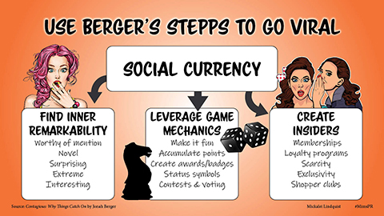

Degrees
BIS: Strategic Communication & Information Design
George Mason University, expected Spring 2025
Certificate: Web Design & Development
Parkland College, 2005
Coursework
Graphic Design Methods And Principles
AVT 311, George Mason University
Typography
AVT 215, George Mason University
Sample book typesetting
Book cover meant to be in the style of Saul Bass
Assignment was to create a vintage style ad for a modern product
Public awareness infographic
Introduction To Public Relations
Northern Virginia Community College
Public Relations And Social Media
COMM 384, George Mason University
Listicle

Social media image describing Berger's STEPPS to make viral content
Social media image with quick facts about TikTok
Basic Concepts In Psychology
Univeristy of Illinois
Javascript
Parkland College
Introduction To Web Design
Parkland College
Advanced Composition
ENGH 302, George Mason University
Blog Assignment
Statistics
Parkland College
Introduction To Computing
Northern Virginia Community College
Digital Design
Parkland College
2D Design and Color
Parkland College
Composition
Northern Virginia Community College
U.S. Women's History
Northern Virginia Community College
Introduction To Sociology
University of Illinois
Drawing I
Parkland College
Introductory Biology I
Parkland College
Writing Across The Media
COMM 303, George Mason University
Breaking news story
Professional & Technical Writing
ENGH 388, George Mason University
The Nonprofit Sector
INTS 331, George Mason University
Principles of Fundraising
INTS 431, George Mason University
Business & Professional Communication
COMM 320, George Mason University
Web Authorship & Design
ENGH 375, George Mason University
Home
Portfolio
Work History
Coursework